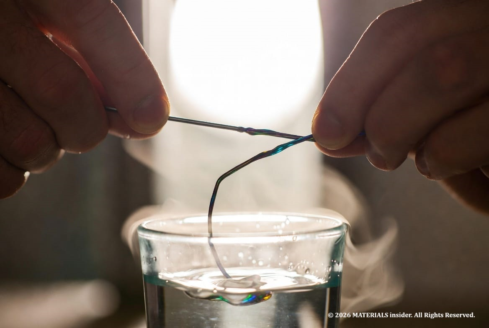
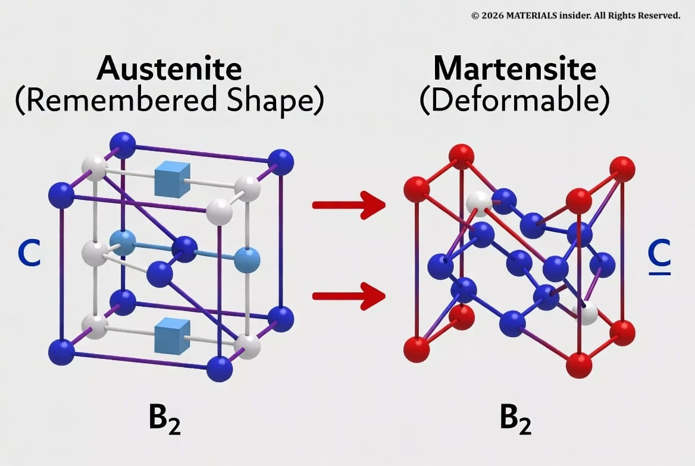
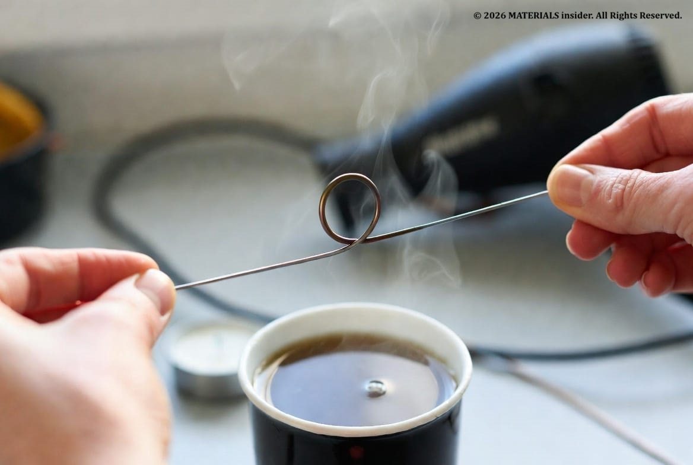
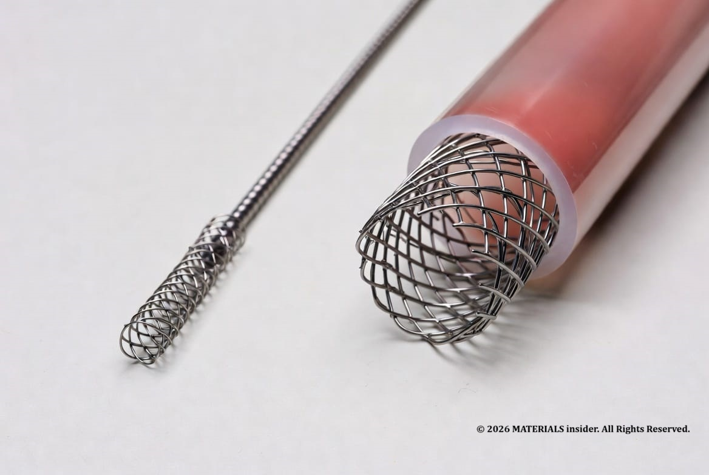
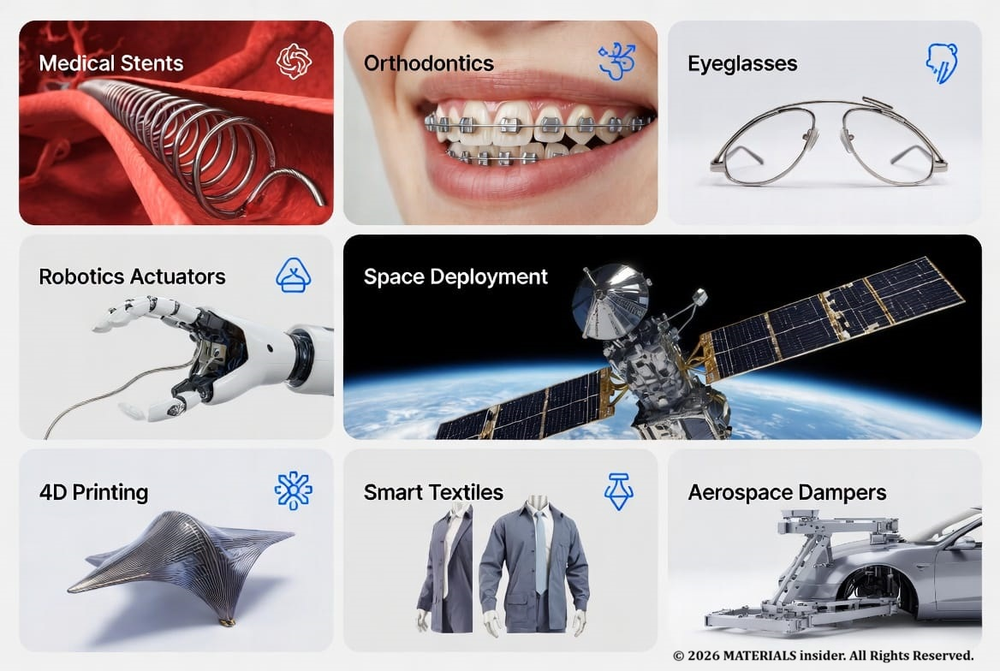

The Shape Memory Alloy: The Magic Metal That Remembers Its Shape
Imagine bending a thin metal wire into any shape you want — a zigzag, a loop, or even crumpling it — and then simply dipping it in hot water or warming it gently. Within seconds, it snaps back perfectly to its original straight form, as if it has a built-in memory.
Imagine bending a thin metal wire into any shape you want — a zigzag, a loop, or even crumpling it — and then simply dipping it in hot water or warming it gently. Within seconds, it snaps back perfectly to its original straight form, as if it has a built-in memory. This isn’t magic or science fiction. This is *Nitinol, the most popular **shape memory alloy* (also called memory metal or smart metal) that is already saving lives and powering next-generation technology.

What is Nitinol?
Nitinol (Nickel-Titanium Naval Ordnance Laboratory) is a shape memory alloy made of roughly equal atomic percentages of nickel and titanium. Discovered in the early 1960s, it exhibits two remarkable behaviors:
- Shape memory effect: It returns to a pre-programmed “remembered” shape when heated above a specific transition temperature.
- Superelasticity (or pseudoelasticity): At the right temperature (often body temperature), it can bend or stretch up to 10–30 times more than ordinary metals and immediately spring back without permanent damage.
These properties come from a reversible change in its internal crystal structure — not from any electronic trickery, but from how its atoms arrange themselves.
How Nitinol Works at the Atomic Level?
The secret is a phase transformation between two crystal structures.
At higher temperatures, Nitinol exists in the austenite phase — a strong, orderly cubic (B2) crystal lattice. This is the “remembered” or parent shape programmed during manufacturing or training.
When cooled below its transformation temperature (which engineers can tune from well below freezing to over 100 °C by adjusting the nickel-titanium ratio), the structure shifts to the martensite phase. Here the atoms rearrange into a softer, twinned, zigzag pattern. Because the atoms can slide and detwin easily without breaking bonds, you can bend or twist the material dramatically.
Heat it back above the transition temperature and the atoms rapidly snap back into the original austenite cubic arrangement. The material returns exactly to its trained shape — sometimes in less than a second. This transformation is fast, repeatable (millions of cycles), and happens without diffusion of atoms.

Programming / Training Nitinol at Home – Safe Experiments & Steps:
You can easily demonstrate the shape memory effect at home with commercial nitinol wire. Full custom “programming” of a brand-new shape requires high heat and proper equipment, but here’s exactly what you can do safely.
- Buy nitinol wire or shape memory nitinol spring online (search “nitinol wire experiment” or “nitinol wire kit”). Choose wire with a transition temperature around 40–80 °C so hot tap water or a hairdryer works easily.
- Safety first: Wear gloves when handling hot objects. Use adult supervision. Prefer hot water or a hairdryer over open flame. Keep water nearby to cool quickly. Never leave heating sources unattended.
- At room temperature (below transition), gently bend or twist the wire into any new shape. It stays deformed — this is the soft martensite phase.
- Trigger the memory:
- Dip the deformed wire into a cup of hot water (60–90 °C).
- Or run a hairdryer on high heat along the wire.
- Watch it instantly return to its original straight or pre-programmed shape!

Advanced Training of a New Shape (Lab-Level – Do with Caution):
To make Nitinol remember a completely different shape (for example, turning straight wire into a permanent coil):
- Fix the wire in the exact desired shape using a metal fixture or mandrel.
450–550 °C (red-hot) for 10–30 minutes while held in that shape. - Cool it (air cool or controlled quench).
- Now deform it at low temperature — when heated, it will return to the new trained shape.
Strong warning: This involves open flame or kiln temperatures, fire risk, and burns. It should only be done with proper safety equipment, ventilation, and experience — ideally in a school lab or by professionals. Most students and hobbyists should start with ready-made nitinol wire or educational kits that are already trained.
Practical Applications of Nitinol Shape Memory Alloy Today:
Nitinol is already widely used because it is biocompatible, corrosion-resistant, and fatigue-resistant.
- Medical devices — Self-expanding *nitinol stents* that are compressed small for catheter delivery and then expand automatically at body temperature to open blocked arteries. Orthodontic wires in braces that apply gentle constant force. Flexible surgical tools and bone anchors.
- Consumer products — Superelastic eyeglass frames that bend without breaking. Some phone antennas and toys.
- Robotics & actuators — Nitinol wires that contract when heated electrically (Joule heating) act like artificial muscles in grippers, valves, and adaptive mechanisms.
- Aerospace & automotive — Vibration dampers and deployable structures.

Futuristic Applications of Shape Memory Alloys:
Researchers and engineers are already building even more ambitious uses:
- 4D printing & morphing structures — Objects that change shape over time or with temperature (self-deploying solar panels, adaptive drone wings, or furniture that assembles itself).
- Soft robotics — Lifelike robots that squeeze through tight spaces then stiffen, or grippers that gently handle delicate objects using low-voltage nitinol “muscles.”
- Space exploration — Ultra-reliable self-deploying antennas, solar arrays, and habitats on satellites and future Mars missions — no heavy motors required.
- Next-gen medicine — Smart implants that adapt inside the body, self-adjusting heart valves, or drug-delivery systems triggered by body temperature.
- Smart textiles & architecture — Clothing that adjusts insulation with temperature, or buildings with adaptive structural elements.
As additive manufacturing and AI design tools improve, nitinol and other shape memory alloys will become building blocks for truly intelligent materials.

Conclusion:
Nitinol proves that by engineering materials at the atomic level, we can create substances that seem almost alive — they remember, respond, and adapt. From life-saving stents to future self-morphing robots and spacecraft, shape memory alloys like nitinol are a shining example of how materials science turns fundamental physics into real-world magic.
Whether you’re a 20–22-year-old student doing your first home experiment or an engineer designing the next breakthrough, nitinol shows that the smartest materials often work because their atoms simply know where they belong.
Ready to try a nitinol wire experiment yourself? Grab a kit, follow the safe steps above, and watch the magic happen. Share your results or questions below — we love seeing student experiments!
This article was written for MATERIALSinsider based on validated peer-reviewed sources and recent experimental reports. All technical details have been cross-checked against the primary publications.
Share this article: